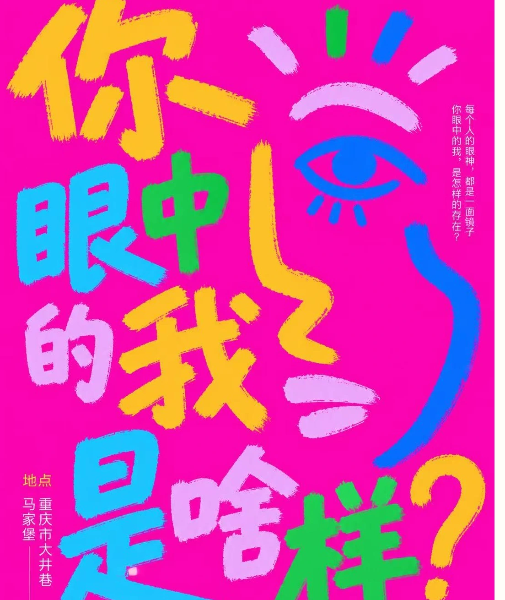

MAJIAOBAO / COMMUNITY
马家堡
有样。
每个人，
都是社区的一笔。

MAJIAOBAO / COMMUNITY04
PROJECT OVERVIEW / 项目概述
The project.
从现场调研与居民参与出发，把社区里真实的人与故事转化为视觉语言，再通过物料、公共画展和墙面共创，让公共空间成为居民能够参与、也能够被看见的地方。
- DISCIPLINE / 方向
- 社区共创 / 空间激活
- ROLE / 负责内容
- 社区调研、视觉系统、活动策划、空间激活
- DELIVERABLES / 产出
- 视觉系统 / 共创物料 / 公共画展 / 墙面应用
01现场调研
先走进社区，
再谈如何改变。
从现场观察、居民活动与空间关系出发，为后续共创建立具体的语境。
社区更新，
从日常生活开始。
人的活动、道路与公共空间共同构成社区生活。调研为参与方式和后续视觉表达提供依据。
02共创视觉
你看我，
我也看见你。
用鲜明色彩、人物轮廓与开放的表达语言，让社区共创拥有易于识别、也便于参与的视觉入口。
PINK#FF2D9C
BLUE#1640ED
YELLOW#FFDA36
GREEN#52D86D
PAPER#F5F1E8
03参与与物料
把“看见”，
变成一次可以参与的行动。
从海报、人物轮廓到随身物料，连接招募、创作与分享。
01 / INVITE
发出邀请
通过视觉物料让居民理解并进入项目。
02 / CREATE
共同创作
用开放的图形与人物关系鼓励表达。
03 / SHARE
回到社区
让作品走入公共画展与日常使用。
04公共画展
让社区故事，
在公共空间相遇。
从个体表达走向集体呈现，让日常经过的地方成为可以停留、观看与交流的场所。
05空间激活
把一面墙，
交还给大家的想象。
以共创图像延展墙面表达，让居民能够在熟悉的环境里看见自己的参与。
COMMUNITY → CO-CREATION → PUBLIC SPACE从现场，回到生活。
ORIGINAL PROJECT / 07 PAGES查看完整原稿
保留原有方案的全部页面。点击图片可放大查看细节。